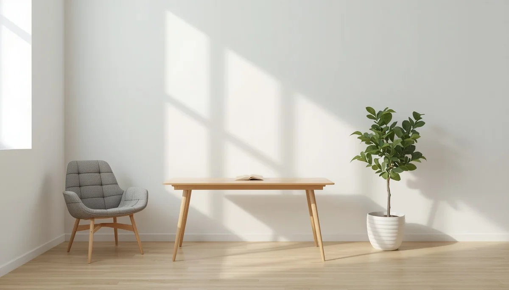
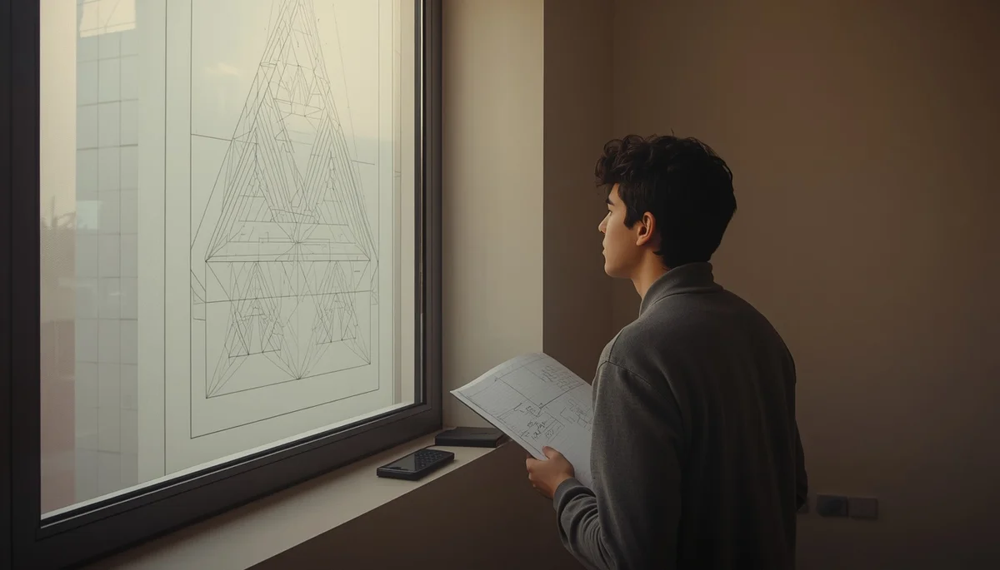

Escoliosis idiopática: Signos de alerta y manejo físico
La escoliosis idiopática del desarrollo es una desviación tridimensional de la columna vertebral que suele manifestarse con mayor claridad durante las etapas de crecimiento acelerado en la infancia y la adolescencia. Conocer las señales visuales tempranas y comprender las opciones de acompañamiento físico permite actuar con tranquilidad y rigor médico. Pincha en cada tarjeta para profundizar en cada tema.

¿Qué es la escoliosis idiopática?
Una aproximación clara para comprender en qué consiste esta desviación tridimensional de la columna sin alarmismos innecesarios.

Signos de alerta y asimetrías visibles
Aprende a identificar indicios sutiles como la desnivelación de hombros, omóplatos prominentes o asimetría en la cintura.

La prueba de Adams y el examen visual
Cómo se realiza la maniobra de flexión anterior del tronco para detectar rotaciones vertebrales y gibas costales en casa o consulta.

Valoración médica y el ángulo de Cobb
El papel del especialista en traumatología o rehabilitación, el uso de radiografías y la medición de grados de curvatura.

Fisioterapia especializada y autocorrección
La importancia del movimiento, la tonificación simétrica y los métodos de ejercicios específicos para el control de la curva.
El uso del corsé ortopédico en la adolescencia
Acompañamiento emocional y pautas prácticas para integrar el corsé en la rutina diaria cuando el equipo médico lo prescribe.

Deporte, actividad física y autoestima
Cómo fomentar la participación en actividades lúdicas y deportivas sin restricciones infundadas, cuidando el bienestar emocional.

Controles periódicos y maduración ósea
La relevancia del seguimiento médico continuo hasta finalizar el periodo de crecimiento para asegurar la estabilidad espinal.
🌱 Continúa profundizando en la salud y el bienestar infantil
Para acompañar la crianza y los hábitos de bienestar de forma completa, te sugerimos explorar estos recursos:
- 🧭 Explora la guía relacionada: Higiene postural y prevención de problemas de espalda
- 🎙️ Escucha el podcast: Límites con amor y regulación emocional (Ep. 07)